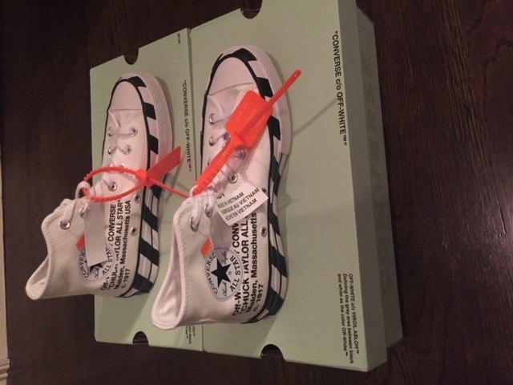

2016 - 2017
First, it started as a hobby. I collected limited-edition footwear, apparel, and accessories. Soon, it transitioned into a profitable business. I had a unique ability to recognize a profitable product based on consumer trends, obtain that limited product, and sell that item. Any Yeezy or Jordan 1 release was obtained in large quantities. With more notable collaborations like Off White x Nike and Travis Scott x Nike I was usually able to obtain one pair per colorway. At the end of 2017, I had purchased over 400 pairs of shoes.
2018 - 2019
Continued to buy and sell limited edition products. Developed a notable worldwide clientele. Sneaker release procedures and my ability to acquire large quantities of pairs had become more difficult. Began focusing on acquiring extremely discounted shoes and apparel which I saw great market potential.
Various Clients

2019
The footwear business was only a start. I had developed relationships with Chinese suppliers and sourced various products from China and sold them in the United States. The most notable business was Fuego Flags. I designed flags and had them produced from a wholesale supplier in China.
Summer 2020
Transitioned from sneakers to outdoor products. When Covid hit, using various software that tracks online product quantities and trends, I predicted the outdoor sporting goods industry would be massively impacted and be in huge demand. I had secured a contract for over 50 above-ground pools and instilled various relationships with retail stores. I acquired bikes, pools, and other products. First, we began shipping products via FedEx. However, experienced various shipping issues including stolen and damaged items. Then we sold all products through in-person meetup. At one point, one individual drove four hours to purchase our product. I set up a program that offered discounted products to first responders. As I met up with various customers and understood what a difficult time it was for most families, I often gave discounts, far from the agreed-upon price
2020-2021
Only resold products if it was truly worth my time. Had employees based nationwide who would pick up pairs that I reserved at various stores. The picture involves a day’s work where I secured several profitable pairs. I began to take my entrepreneurial mindset and focus on startup opportunities and real product ideas.
Now I obtain limited-edition releases in large quantities through various connections I have made. Usually, it only takes an hour to package up the products and send them out. Just recently on November 8th, 2021 I received a shipment of 12 Jordan 4 Retro Oreos at an average wholesale price of $155, and a secondary market value of $350. I am currently focusing on more notable business ventures.